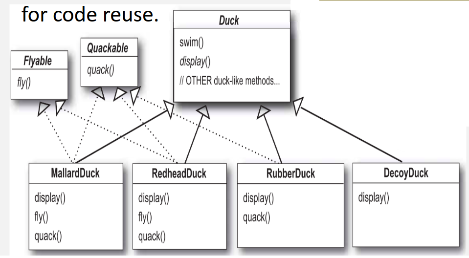

Teórica 10
Design Patterns
Patterns
- Baseia-se na ideia que alguém já terá resolvido os nossos problemas;
- São soluções comprovadas para problemas comuns e conhecidos;
- Emergem da experiência de outros devs para resolver problemas de design;
- A melhor maneira de usar padrões é encher o cérebro com eles para, em seguida, reconhecer o local nos nossos designs em que podemos aplicá-los;
- Ao invés de reutilização de código, os padrões permitem a reutilização de experiência;
- São:
- Uma descrição textual de uma solução genérica para um problema recorrente num dado contexto;
- Um chunk pré-definido e construído para servir uma dada situação;
- Um pacote de decisões de design que podem ser reutilizadas como um conjunto.
- Existem em níveis diferentes:
- Padrões de Sistema (estilo arquiteturais);
- Padrões de Design;
- Padrões de Código.
- Não são perfeitos para todos os problemas;
- A sua habilidade de efetuar uma separação entre as coisas que alteram e as que não alteram, revela-se muito útil para a implementação de sistemas;
- 3 tipos:
- Criacionais;
- Estruturais;
- Comportamentais.
- Vamos descrever dois padrões:
- Strategy (estrutural);
- Observer (comportamental);
- Decorator (estrutural).
Strategy Pattern
- Veja-se o exemplo da implementação de patos.
- Todos os patos são capazes de quack e de swim, assim, a superclasse Pato deve tratar do código de implementação;
- O método
display()é abstrato, visto que todos os patos têm aparências diferentes; - Cada subtipo de pato é responśavel por implementar o seu próprio comportamento de
display().

- Se quisermos adicionar um novo atributo, por exemplo, o método
fly(), este será adicionado à classe do topo, visto que todos os patos devem ser capazes de ter esse método.- Todas as subclasses vão herdar o método
fly()por herança.
- Todas as subclasses vão herdar o método

-
No entanto, se considerarmos patos de borracha, estes não devem ser capazes de voar.
- Assim, temos de dar override ao método
fly();
- Assim, temos de dar override ao método
-
O mesmo acontece com o método
quack(); -
Assim, devemos escrever esses métodos diretamente dentro da subclasse RubberDuck;
-
O uso da herança para reutilização, neste caso, não foi bom para a manutenção da aplicação;
-
A herança não é bom mecanismo quando são necessárias atualizações;
- Pode gerar duplicação de código entre subclasses;
- Alterações no código podem fazer alterações entre subclasses não previstas.
-
Uma possível estratégia, é separar os métodos
fly()equack(), visto que estes podem variar entre patos;- O uso de interfaces é mau para a reutilização de código.
-
Quando um método precisa de ser modificado, é preciso verificar todas as subclasses.

Princípio de design 1: Devemos identificar os aspetos da aplicação que variam e separá-los dos restantes.
Princípio de design 2: Devemos programar para uma interface, não para a implementação.
Princípio de design 3: Devemos favorecer a composição ao invés da herança.
- Este padrão define uma família de algoritmos, encapsula cada um deles e permite a troca entre eles;
- Deixa que que o algoritmo varie independentemente da utilização que o cliente lhe pretende dar.
Observer Pattern
- Veja-se o exemplo de uma aplicação de monitorização de meteorologia:
- Problema: se novos Displays são adicionados, então precisamos de atualizar os dados da meteorologia;
- Oportunidade: a informação/interface necessária entre displays é semelhante.
- Este padrão define uma dependência de um para muitos entre objetos;
- Quando o estado de um objeto altera, todos os seus dependentes são notificados e atualizados de forma automática.
Decorator Pattern
Princípio open-closed: Um módulo ou classe deve ser aberto à sua extensão, mas fechado à modificação.
- Este é o princípio mais importante do design Orientado a Objetos;
- Os módulos devem ser escritos de forma a poderem ser extendidos, sem serem modificados;
- Devemos querer alterar o que os módulos fazem sem ser necessário alterar o seu código;
- o decorator pattern coloca responsabilidades adicionais a um objeto de forma dinâmica;
- Providencia uma alternativa flexível para subclassing de forma a extender as funcionalidades.